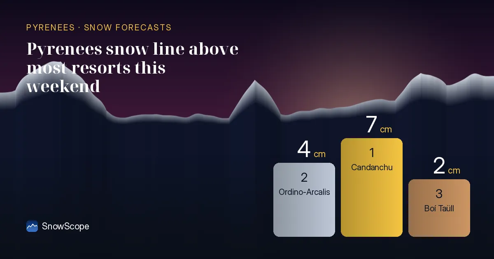
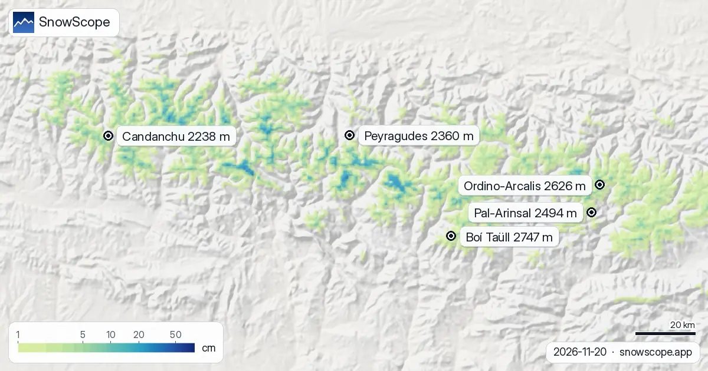
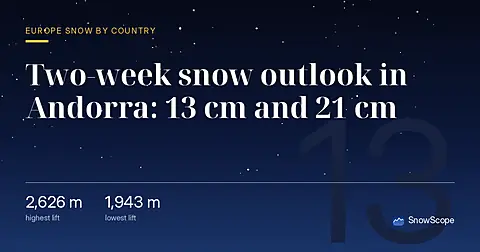
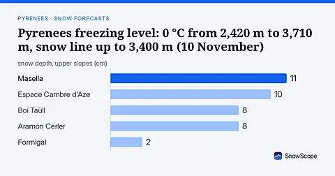

Pyrenees snow line above most resorts this weekend
Rain is falling on the existing snowpack across the lower and mid-mountain Pyrenees through this weekend because the freezing level remains well above base elevations. From Sunday, the 0 °C level drops sharply, shifting precipitation from rain to snow and expanding snow cover from 25 to 32 resorts by day's end.
See the live snow forecast for Boí Taüll in the SnowScope appSnow depth, powder alerts and the 3D map, free.
Rain falling where snow should accumulate
On Friday, the boundary between rain and snow sits at roughly 1,840 m during the warmest hours—about 300 m below the freezing level itself. This line climbs even higher on most peaks, leaving resorts at mid-altitude facing rain instead of fresh snow. Candanchu is in the worst position: snow already sits on the upper slopes, but rain will fall directly onto it both Friday and Saturday, adding weight and risk.
Ordino-Arcalis, Pal-Arinsal and Peyragudes remain above the snow line through the entire weekend. At these resorts, any precipitation falls as rain at all elevations. Even at Boí Taüll, the snow line tops the resort peak on Friday, so the upper slopes see rain rather than accumulation.
| Resort | Snow depth | New snow, 72 h | Coming, next days | Top |
|---|---|---|---|---|
| Boí Taüll | 2 cm | 6 cm | 14 cm | 2,747 m |
| Ordino-Arcalis | 4 cm | 7 cm | 9 cm | 2,626 m |
| Pal-Arinsal | 2 cm | 4 cm | 8 cm | 2,494 m |
| Peyragudes | 0 cm | 2 cm | 9 cm | 2,360 m |
| Candanchu | 7 cm | 7 cm | 20 cm | 2,238 m |

Sunday: the turning point
The pattern shifts sharply on Sunday. The freezing level drops to 1,640 m in the north, pulling the snow line down to around 1,340 m. This change is forecast with high confidence and flips the entire dynamic: snow arrives where rain has been falling, and new snow reaches the mid-mountain terrain for the first time since the week began.
Snow coverage is forecast to nearly double by Sunday evening, from 1,090 km² to 2,510 km². Of the 53 resorts in the range, 32 should lie within or above the snow line by then, compared with 25 today. Monday's forecast lifts the freezing level again to 2,650 m, but by then the high-altitude resorts will have accumulated fresh material.

Where fresh snow arrives fastest
Candanchu leads the forecast with 20 cm of new snow expected over the next few days. It sits low enough to catch snow on both Sunday and Monday, and Friday's rain-on-snow will have bonded the base, creating a firmer foundation. Boí Taüll is forecast to gain 14 cm, and Ordino-Arcalis 9 cm. These totals reflect the timing of when each resort drops below the snow line.
Current depths remain thin: Candanchu has 7 cm on upper slopes, Ordino-Arcalis 4 cm, and Boí Taüll just 2 cm. Even after the forecast accumulation, early-season coverage will be patchy. Rocks are likely close to the surface at lower elevations.
What rain-on-snow means for stability
When rain falls onto an existing thin snowpack, it bonds the layers together and adds extra weight. This can improve surface stability in the short term but creates a firmer, wetter base. At Candanchu, the rain-on-snow risk spans both Friday and Saturday, so the existing shallow snow will become denser.
If you plan to ski off-piste during this period—especially at Candanchu—check the official avalanche bulletin. The combination of sudden rain followed by rapid cooling could create unstable slab conditions as fresh snow loads onto the wet base from Sunday onwards.
Friday and Saturday: elevation is everything
This weekend, elevation is your best guide to snow type. Stay above 2,500 m if you want dry snow; below that, expect rain. The snow line climbs higher on Saturday than Friday at several resorts, so conditions will be wetter at mid-altitude on the second day. Overnight refreezing at high elevations from Sunday onwards will create firm crust early mornings, softening through the day as the sun warms the slopes.
By Sunday evening, the entire range will transition into dry snow accumulation mode, and the freezing level will no longer be the limiting factor for skiing—depth and coverage will be.
Tips for skiers
- Friday through Saturday: if you want dry snow, stay above 2,500 m; rain-on-snow at lower elevations will soften the surface and change slope stability.
- Candanchu faces rain falling on thin snow both Friday and Saturday; check the official avalanche bulletin before going off-piste.
- Sunday: the snow line drops to around 1,340 m; for the first time in days, the entire range will be receiving snow rather than rain.
- Pack a waterproof layer for Friday and Saturday if you plan lower-elevation runs; from Sunday, dry snow conditions return.
- Monday onwards: expect firm crust early mornings at high elevations from rapid refreezing; Candanchu (20 cm incoming) and Boí Taüll (14 cm) will offer the best riding once the transition finishes.
About these numbers
Resort snow depths are the deepest snow on the resort's upper slopes on the date shown; they are estimates for an area, not a measurement at one point. Forecasts can change. Always read the official avalanche bulletin before going off-piste.
Official avalanche bulletins: Météo-France / Meteocat / AEMET
Cite this report
For research, teaching or the press: the numbers and charts are free to reuse under CC BY 4.0 with this citation.
SnowScope (2026), Pyrenees snow line above most resorts this weekend, https://snowscope.app/blog/en/2026/11/pyrenees-freezing-level-snow-line-20-november-2026.html, accessed 2026-11-20
SnowScope (Atlas Labs). (2026, November 20). Pyrenees snow line above most resorts this weekend. SnowScope snow reports. https://snowscope.app/blog/en/2026/11/pyrenees-freezing-level-snow-line-20-november-2026.html
BibTeX
@misc{snowscope2026pyreneesfreezinglevelsno,
author = {{SnowScope (Atlas Labs)}},
title = {Pyrenees snow line above most resorts this weekend},
year = {2026},
month = nov,
howpublished = {\url{https://snowscope.app/blog/en/2026/11/pyrenees-freezing-level-snow-line-20-november-2026.html}},
note = {Published 2026-11-21 12:44 UTC; accessed 2026-11-20}
}· CC BY 4.0 · Methods, data and tools →
Boí Taüll: snow and temperature by height, this winter vs last (tools) →
Follow Boí Taüll
Free: a message when fresh snow is coming, and the forecast every morning.
More snow reports

Two-week snow outlook in Andorra: 13 cm and 21 cm. Snow cover, new snow, resorts and the days ahead in Andorra on 17 November.

The 0 °C level across the Pyrenees ranges from 2,230 m to 2,820 m over the next days. Snow stays safe from rain as the snow line sits low at each resort.

Pyrenees freezing level 10 November: 0 °C ranges from 2,420 m to 3,710 m across the region. Snow line peaks at 3,400 m; rain-on-snow risk on three days.